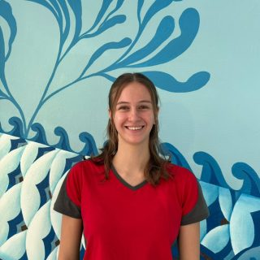
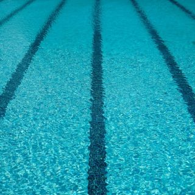

Luca
Schwimmlehrer
Ich bin Luca, geprüfter Meister für Bäderbetriebe und leidenschaftlicher Schwimmer. Am meisten Freude macht es mir, wenn Kinder und Erwachsene ihre Erfolge im Wasser erleben. Ob Schwimmanfänger oder Techniktraining, ich begleite alle mit Geduld und Begeisterung.
Lukas
Schwimmlehrer
Ich bin Lukas. Schwimmen ist schon immer mein Sport gewesen! Ich bin seit klein auf im Schwimmverein aktiv und gebe meine langjährige Erfahrung als Trainer mit viel Freude weiter. Ich begleite euch vom Anfängerkurs bis zum Techniktraining, wobei Sicherheit und Spaß im Wasser immer an erster Stelle stehen.
Chris
Schwimmlehrer
Hey ihr Wasserratten! Ich bin Chris, Schwimmlehrer und Ausbilder im Prienavera Erlebnisbad. Beim SC Magdeburg hab ich gelernt, schnell zu schwimmen. Heute sorg ich dafür, dass andere überhaupt loskommen, mit Spaß, Geduld und manchmal einem kleinen Spritzer Humor. Ob Anfänger oder Bahn-Profi – Hauptsache, wir bleiben alle über Wasser!

Irene
Schwimmlehrerin
Hey, ich bin die Irene! Ich bin ausgebildete Fachangestellte für Bäderbetriebe und freue mich riesig, jetzt auch als Schwimmlehrerin durchzustarten. Ich liebe es, anderen das Schwimmen beizubringen und zu sehen, wie sie sich im Wasser immer wohler und sicherer fühlen. Wenn ich nicht gerade am Beckenrand stehe, bin ich selbst gerne im Wasser oder draußen unterwegs.
Rainer
Schwimmlehrer
Rettungsschwimmer, Mitglied Wasserwacht BRK, C-Trainer Breitensport, Ausbildung als Übungsleiter. Ausgebildeter Ersthelfer, Zusatzausbildung als Ersthelfer im Kleinkindbereich. Wasser ist meine Leidenschaft. Als aktiver Schwimmer habe ich mich bereits in der Jugend für den Schwimmsport begeistert. Kursleitung für Seepferdchen Schwimmkurse in Rosenheim und Prien, Schwimmkurse für Erwachsene.

Sabine
Schwimmlehrerin
Unser erfahrenes Team-Mitglied mit Leidenschaft für sicheres und freudvolles Schwimmenlernen.